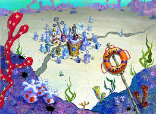

Welcome to Bikini Bottom

Explore the Wecky World of Bikini Bottom
Dive into the underwater city and meet its quirky residents!
About Bikini Bottom
Bikini Bottom is the Vibrant Underwater city where spongebob squarepants and his friend live. From the Krusty Krab to Jellyfish Fields. there's always something fun happening here!
Top Attractions
- Krusty Krab: Home of the famous Krabby Patty. Don't forget to try one!
- Jellyfish Fields: Perfect for jellyfish catching and pienies/
- Goo Lagoon: A beautiful lagoon fot swimming and sunbathing.
- Sandy's Treedome: Visit Sandy Cheeks treedome for a taste of Texas underwater.
Travel Tips
- Bring your jellyfishing net for a fun day at jellyfish fields
- Dont forget to try a Krabby Patty at the Krusty Krab.
- Be careful around Plrankton's Chum Bucket - it's not as tasty as it sounds!